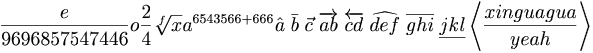
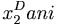
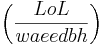
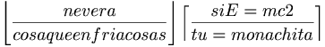

De: La Frikipedia, la enciclopedia extremadamente seria.
De: La Frikipedia, la enciclopedia extremadamente seria. De: La Frikipedia, la enciclopedia extremadamente seria.
| De la serie Aparatejos y gadgets inútiles: | |||
| ' | |||
| |||
| Sirve para: | Ser un pisapapeles gigante | ||
| Empresa desarrolladora: | Ninguna | ||
| Año de invención: | 1988 | ||
| Empresas que lo fabrican: | Ninguna empresa se arriesgaría a hacer estas cosas | ||
| Nivel de maldad: | Han intentado dominar el mundo muchas veces, sin éxito | ||
| Tiempo o vida |
3 | ||
| ¿Se aconseja usarla? | Sólo si quieres limpiar tu comida con pirólisis | ||
| ¿Se recomienda el boicot o uso de alternativas? | Siempre que se tenga a mano una nevera de toda la vida sí | ||
| Cantidad de llamadas al servicio al cliente: | Varias miles de millones | ||
«Hoy en día, en la época de grandes inventos, sorprende ver semejante gilipollez.»
~ Comprador compulsivo de idioteces acerca de la nevera con pirólisis
«Me he quedado sin nevera...»
~ Cliente de la nevera con pirólisis después de la primera pirólisis
«Solo a Frink se le ocurriría esta parida»
~ Compañero de universidad de el profesor Frink acerca de su invento
La nevera con pirólisis fue creada en el 1988, es un invento del profesor Frink, el cuál dicen rumores se suicido después de crear semejante atrocidad la nevera con pirólisis. También cabe destacar que las neveras con pirólisis nunca no han estado muy integradas en la sociedad, la gente las miraba mal, las ignoraban o incluso se dieron casos de asesinatos a manos de un ser humano. Aún así, las neveras con pirólisis siempre han sido un símbolo de unión y felicidad(quien sabrá por qué).
Como por todos es conocido, las neveras con pirólisis han intentado bastantes veces dominar el mundo. En este apartado podréis encontrar unos cuantos:
En el 1996 las neveras debutaron en el malévolo plan que es dominar el mundo, las neveras se confiaron demasiado, pensaron que seria fácil, que pese a su inferioridad númerica no tendrian problemas, se equivocaban. Exactamente el 2 de febrero lanzaron el ataque, irrumpieron en la Casa Blanca, y rogaron por favor al presidente que les entregara el mundo. Fracasaron estrepitosamente. Aprendieron que las cosas se hacen o por las malas o no se hacen...
En este año las neveras con pirólisis lanzaron al mundo un mensaje en el que decían que en un año que tenían por decidir, dominarían el mundo y obligarían a todos los humanos a trabajar para ellos.
En este año hicieron público el año en que dominarían la Tierra, el 2011.
En este año publicaron que no dominarían la Tierra, sino que la destruirían.
Las neveras avisan que el final está próximo.
Vuelven a avisar de que el final está próximo.
Construirse una nevera con pirólisis es fácil si sabes cómo, con esta sencilla operación matemática puedes obtener una con garantía de dos años.


 Todo esto nos lleva a la sencilla conclusión que 
Cómo veis, cualquiera puede construirse una nevera con pirólisis, en caso contrario, siempre puedes acudir al siguiente apartado.
Por petición de algunos imbéciles lectores, también escribire 3 formas muy sencillas de conseguir una maravillosa nevera con pirólisis:
Primero, cojes tu tarjeta de crédito. Después cojes la puerta y la dejas en el suelo. Sales por ese hueco que ha quedado entre el el espacio donde antes estaba la puerta, y la pared. Vas a la calle, y vas al negocio con electrodomésticos más cercano. Una vez allí le preguntas al el primer ser humano que veas si en ese recinto venden neveras con pirólisis. Si tienen la compras, si no tienen vuelves a casa y colocas la puerta en su sitio. (OJO: NO HABLAR CON PLANTAS, PECES, TIPP-EX U OTROS SERES SUPERIORES QUE PUEDAN DEJARNOS EN RÍDICULO CON SU INTELIGENCIA SUPERIOR).
Cojes 55 pesetas, ni una más ni una menos. Vas a tu papeleria habitual, y allí pides una nevera con pirólisis. OJO: ES MUY IMPROBABLE QUE DISPONGAN DE ALGUNA.
Vas a la NASA, allí cojes el primer vuelo a la luna que encuentres. Una vez estes en la luna cojes tu Gameboy, y clonas a Missigno 300 veces, acto seguido, vas a una tienda de mascotas lunares ( la que prefieras ) y compras te compras un amigo. Después le dices al amigo que siga los pasos de la Forma 1.
Autor(es):